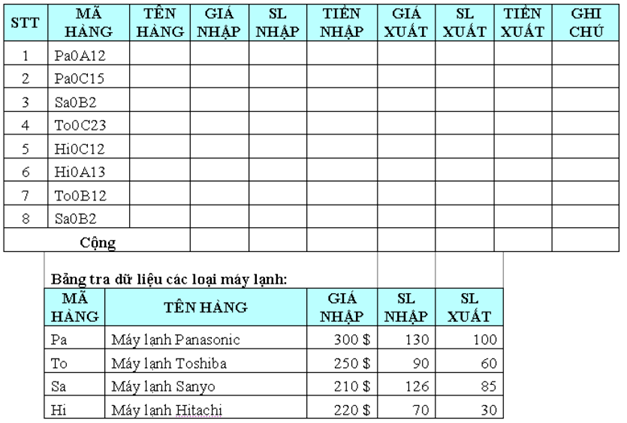

Bài tập Excel 9:
Nhập và trình bày bảng tính như sau:

Yêu cầu:
Câu 1: Dựa vào MÃ HÀNG và Bảng tra dữ liệu các loại máy lạnh, điền số liệu cho các cột TÊN HÀNG, GIÁ NHẬP, SL NHẬP, GIÁ XUẤT, SL XUẤT.
Câu 2: Tính TIỀN NHẬP dựa vào GIÁ NHẬP và SL NHẬP.
Câu 3: Tính GIÁ XUẤT dựa vào MÃ HÀNG. Biết rằng, nếu MÃ HÀNG có ký tự thứ 4 (tính từ bên trái) là A thì GIÁ XUẤT = GIÁ NHẬP +15. Nếu là B thì GIÁ XUẤT = GIÁ NHẬP +12. Còn lại, GIÁ XUẤT = GIÁ NHẬP + 10
Câu 4: Tính TIỀN XUẤT dựa vào GIÁ XUẤT và SL XUÂT. Định dạng đơn vị tiền tệ là USD.
Câu 5: Tính tổng cộng cho mỗi cột.
Câu 6: Trích ra danh sách các mặt hàng có TIỀN XUẤT >=20 000
Câu 7: Chèn thêm cột GHI CHÚ ở cuối bảng. Điền thông tin cho cột GHI CHÚ như sau: nếu SL NHẬP – SL XUẤT >= 60 thì nhập “Bán chậm”, >=30 thì nhập “Bán được”, còn lại ghi “Bán chạy”.